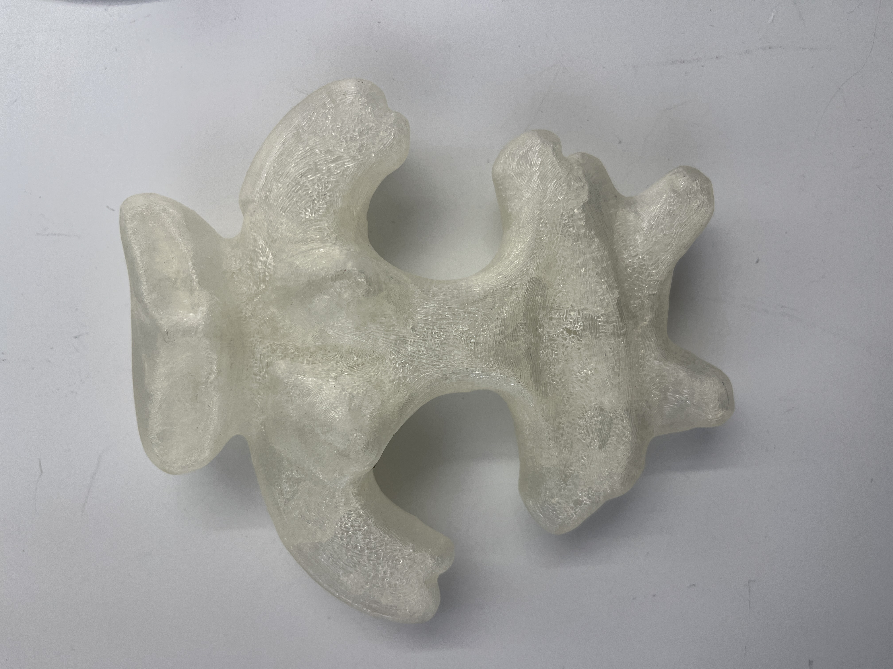
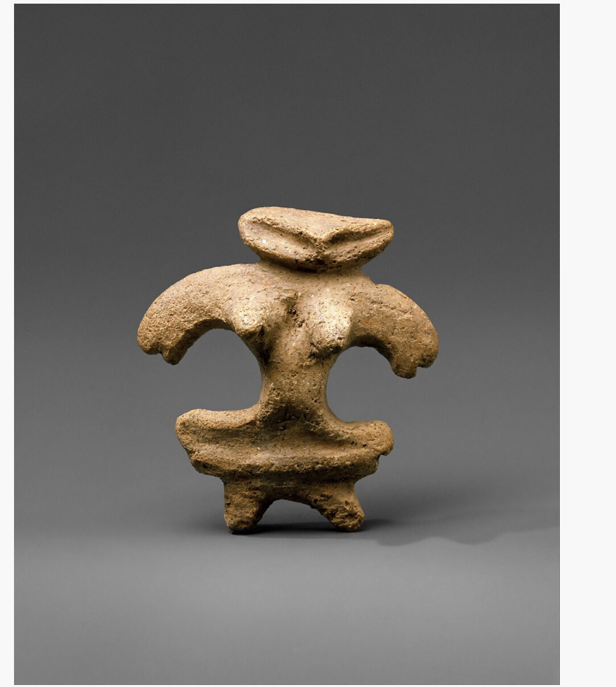

Concept and process
This piece is a clear plastic replica of a Japanese Dogu figurine from the Jomon period, modeled after an artifact in the Met’s archives. Dogu are prehistoric ceramic figures thought to have been used in fertility rituals, though their exact purpose remains unknown. For my replica, I used a photo of the original figurine—currently not on display—from the Met’s website. I employed a machine learning model to convert the image into a 3D file, which I then printed with low-density infill and sanded to achieve a semi-translucent appearance. The finished piece maintains the form of a ceramic object but displays visible striations from the plastic layers. By replicating the original in a transparent, decontextualized material, the work underscores the disconnect between past sacred functions and present-day perceptions. Stripped of its ritual use and cultural authority, the object becomes a shell—an echo of a belief once embedded in material. It prompts reflection on how time, context, and materiality transform spiritual artifacts into aesthetic or archaeological curiosities.
Original Image
